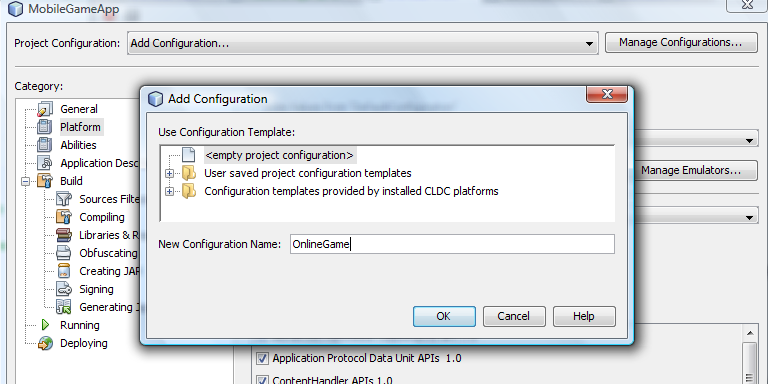
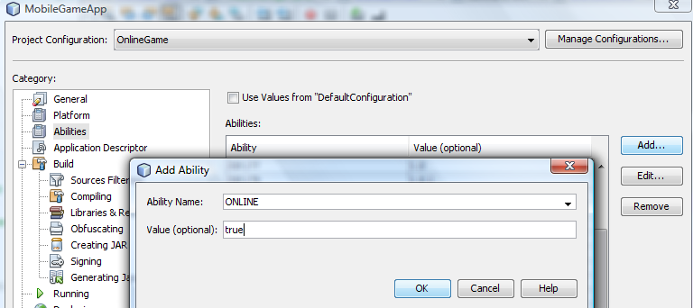
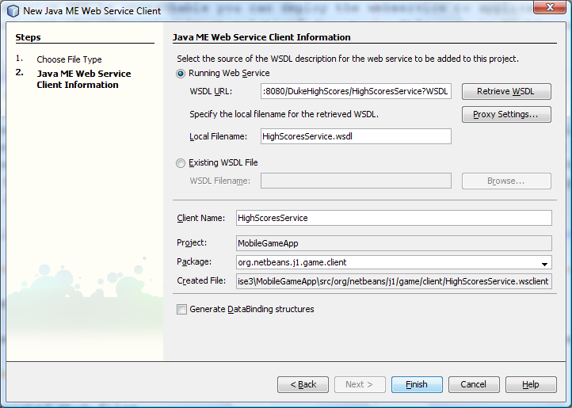
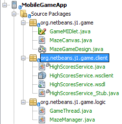

Exercise 4: Make it connected
Introduction:
We created the mobile game. In this exercise we will enhance it to share the high scores with other users. It common feature of games in todays mobile market. Players like to compete and it's better to compare your results with real players.We will use Java ME Web Service API (JSR 172) to connect to the web service that collects the high scores. The same web service also provides the latest results to be displayed in the High Score table.
The NetBeans Mobility includes a wizard for generating the JSR172 stubs for the mobile client that will connect to a web service.
In this step you will not enhance the game functionality itself but you will make the application connected to a server part.
Steps to follow:
- Create new configuration
- Generate stubs
Step 1: Create new configuration
In this step you will create new configuration in your project. It will allow us to have two version of the same project. First one will be used for the online game and the second one for offline game.
- Right click the MobileGameApp project. It will open the project Properties.
- In the project properties dialog, select Add Configuration... from Project configurations the combo box. It will open Add Configuration dialog.
-
Type in the name for new configuration - OnlineGame. Finish the dialog.

Figure-4-1: New configuration dialog
- In project properties, select Abilities. Uncheck the Use Values from DefaultConfiguration.
-
Click Add button. In Add Ability dialog provide name ONLINE and value true. Click OK to finish dialog.

Figure-4-2: New ability dialog
- Click OK to close the project properties dialog.
Step 2: Generate stubs
In this step you will generate a mobile client to the web service. We will use the wizard provided by NetBeans Mobility.
- Select File > New File... from main menu.
In the New File dialog select MIDP category and Java ME Web Service Client.
Make sure that MobileGameApp project is selected in Project combo box. Click Next button.
- You have to specify an URL of webservice's WSDL file in this panel. The WSDL can be either a file stored locally on your hard drive or
an URL of a webservice at the internet.
Our webservice should be running at following URL : http://193.86.76.42:8080/DukeHighScores/HighScoresService?WSDL
If you are not able to access the web service WSDL try to check your network settings. Sometimes a firewall or antivirus shield can protect you from connecting to the web service. If the webservice URL is unreachable you can deploy the webservice to application server by yourself. The project with the webservice is at <lab_root>solutions/solution4 directory. The name of the project is DukeHighScores.
- Select the Running Web Service radio button.
- Type the URL of the webservice to WSDL URL text field.
Click Retrieve WSDL button and, if the WSDL file name automatically
appears in the Local Filename field, the WSDL file is successfully downloaded and validated.
The validation of the WSDL is mandatory step. You cannot generate the Java ME Web Service Client to any webservice. There are some restrictions for the webservice defined by the JSR 172. The webservice has to be WS-I Basic Profile compliant. There is no support for asynchronous messaging. No support for SOAP messages with attachments. Support only for the literal representation of messages. No support for extensible type mapping. The wizard will report an error message when you cannot generate the J2ME webservice client for a webservice.
-
The wizard will provide you a default name for the client and package. Change the Package name to org.netbeans.j1.game.client

Figure-4-3: Java ME Web Service Client wizard
-
When you press Finish button the wizard will generate web service client stubs.

Figure-4-4: Generated stubs
Step 3: Use mobile client
You generated the stubs that will allow you communicate with the web service on a server. It is time to use the web service client in the game source code.
-
Add following code to the GameMIDlet.java source code. You can add it to the end of the file.
This will add new method for retrieving the webservice stub.
//TODO: [Exercise 4][step 3] add the getMobileClient() method HighScoresService client = null; public HighScoresService getMobileClient() { if(client == null) { client = new HighScoresService_Stub(); } return client; } - Fix the imports.
-
Update the getAddHighScoreTask method to upload the scores to the server.
public SimpleCancellableTask getAddHighScoreTask() { if (addHighScoreTask == null) { // write pre-init user code here addHighScoreTask = new SimpleCancellableTask(); addHighScoreTask.setExecutable(new org.netbeans.microedition.util.Executable() { public void execute() throws Exception { //#if ONLINE == "true" //TODO: [Exercise 4][step 3] set High score //upload the score to WS getMobileClient().setHighScore(getNameTextField().getString(), lastHighScore); //get the high scores from WS again to synchronize with server side updateHighScoresTable(getMobileClient().getHighScores());r //#else //# //just add the score to the scores table //# addScoreToScoreTable(lastHighScore, getNameTextField().getString()); //#endif //anyway update the High scores table updateSvgWithHighScores(); } }); // write post-init user code here } return addHighScoreTask; } -
Update the getHighScoresTask method to download the scores from the server.
public SimpleCancellableTask getHighScoresTask() { if (highScoresTask == null) { // write pre-init user code here highScoresTask = new SimpleCancellableTask(); highScoresTask.setExecutable(new org.netbeans.microedition.util.Executable() { public void execute() throws Exception { // write task-execution user code here //#if (ONLINE == "true") //TODO: [Exercise 4][step 3] get High Scores //connect to WS and get the latest scores updateHighScoresTable(getMobileClient().getHighScores());//download the high scores //update the high score table updateSvgWithHighScores();//update the svg image with the latest high scores //#else //# //this code is used when the ONLINE ability value isn't true //# //nothing to do. The high scores are in the highScoresValues array already //# Thread.sleep(500); //#endif } }); // write post-init user code here } return highScoresTask; }
Step 4: Run the game
We finished the creation of the game. Even if there is just one source code we created
two versions of the game. One is the OnlineGame that connects to server.
The other one is the origin source code that works offline.
The online version enables you to share the high scores with other players.
- Switch active configuration to DefaultConfiguration
in configuration combobox in middle of toolbar.

Figure-4-5: Switch configuration
-
Run the project. It will run the offline version of the game.
- Switch active configuration to OnlineGame
in configuration combobox in middle of toolbar.
Figure-4-6: Switch configuration
- Run the project. It will run the online version of the game.
Summary:
You connected the game with the server side. It is very easy to use the generated stubs.
The application is now able to upload your result to server and display the list of best results on your device.
We used J2ME Webservices API to achieve this functionality but the J2ME Webservices API is not supported on lot of device in real world.
It is easy to change the client calls to solution not using J2ME Webservice API. You can use the second wizard that NetBeans Mobility provides - "Mobile Client to Web Application".
The difference between these two solutions is described in "LAB-6340: <Advanced Java ME Programming - Streaming Video From Server to Your Device>" Hands-on lab